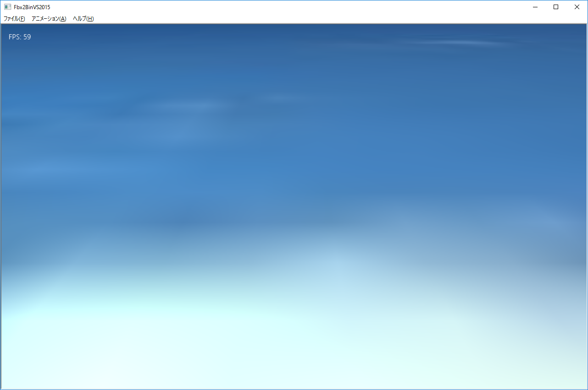

５０１．Fbx2BinVS2015のセットアップ
AUTODESK社の
FBXフォーマットは広く普及している
モデルデータのフォーマットです。
多くの
３Ｄグラフィックソフトもこの形式の出力に対応しており、またその内部のデータの取得も
FBXSDKという形で公開されており、C++プログラムからの利用も、非常に便利です。
しかし、
FBXSDKは非常に大きいので、ゲームそのもののの開発環境に同居させるのは若干無理があります。
そのため、
BaseCrossでは
独自のグラフィックフォーマットを定義し、そのデータを使ってゲーム内に配置する仕組みになっています。
この章で説明する
Fbx2BinVS2015はFBX形式から独自の形式
拡張子.bmfに変換するツールです。ゲームではこの
.bmfファイルをステージ内などに配置します。
.bmfファイルについて
.bmfファイルは
BaseCrossのみで通用するデータ形式です。というより、はっきり言って拡張子もどうでもよいといえばどうでもよく、
データ変換ツールと
ゲーム側で整合性さえ取れてれば
.datなどでも問題ありません。
また、その細かな形式も
確定されたものではなく、プログラムで自由に改変することができます。ようは、FBXデータをゲームで使用するデータに
データ変換できればいいのです。
デフォルトの
データ形式については、別の項で説明します。
Fbx2BinVS2015のセットアップ
Fbx2BinVS2015は、BaseCrossの
Fbx2BinVS2015ディレクトリに入っています。ほかのゲームと違ってそのまま起動しても動きません。以下の環境、また、FBXSDKのセットアップを行う必要があります。
＊MFC（VS2015に付属のマイクロソフト社のクラスライブラリ）のセットアップ
＊FBX_SDKのセットアップ
MFCのセットアップ
MFCというのは
Microsoft Foundation Classといい、
VisualC++のライブラリです。内容的には
WindowsAPIに直結する機能がクラス化されており、
VisualStdio2015Comunityに標準でついています。
MFCを使うと簡単に
メニューや
ダイアログ、そして
ボタンや
入力フィールドなどのコントロールを簡単に実装できるので、
Fbx2BinVS2015のようなデータ変換ツールを作成するのには非常に便利です。
MFCをセットアップするには
VisualStdio2015の管理ツールを使って
VisualC++グループの中の
Microsoft Foundation Classをセットアップします。その際、バージョンに整合性がないと失敗することもありますので、
VisualStdio2015を最新の状態にしてからセットアップしましょう。
FBX_SDK
FBX_SDKは
AUTODESK社の、
FBX_SDKのページからダウンロードします。
そして
VisualStdio2015用のパッケージをダウンロード（セットアップ）できます。
FBX_SDKのサイトのトップからたどると最新のパッケージのページにたどり着きます。
2017年3月の時点で、
FBX SDK 2017.1というバージョンがダウンロードできますので、それをセットアップしてください。
FBX_SDKをセットアップしますと、デフォルトで
C:\Program Files\Autodesk\FBX\FBX SDK\2017.0.1というディレクトリができ、その中に
includeと
libというディレクトリが作成されます。
その２つのディレクトリ内のファイルを
BaseCrossの
Fbx2BinVS2015の中の
FbxLibs内にコピーして使用するわけですが、
includeについては、そのままディレクトリ内を丸ごとコピーしてもらっていいのですが
libのほうは、
FBX_SDK側の、
lib\vs2015\x86\debugの内容を
Fbx2BinVS2015側の
FbxLibs\lib\Debug内へ、
lib\vs2015\x86\releaseの内容を
Fbx2BinVS2015側の
FbxLibs\lib\Release内にコピーしてください。（全体で400メガ以上あります）
これらの環境をセットアップすれば、
Fbx2BinVS2015のソリューションを開くことができるようになります。
Fbx2BinVS2015の起動画面
ビルド後、起動して以下のような画面が出れば成功です。

図0501a